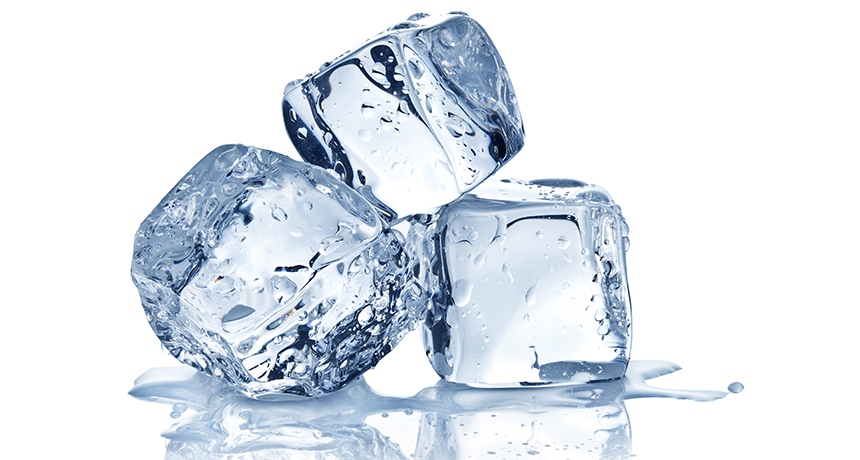

Skip to Main Content
Recipes
recipes
Chocolate Chip Cookies
I swear by Buzfeed's Tasty Chocolate chip cookies
Ingredients

- 1 cup bread flour(125 g)
- ¾ cup all-purpose flour(95 g)
- 2 teaspoons kosher salt, or 1½ teaspoons table salt
- 1 teaspoon baking soda
- 1 cup unsalted butter(225 g), 2 sticks
- 2 tablespoons water, room temperature
- 1 cup dark brown sugar(220 g)
- ½ cup white sugar(100 g)
- 2 teaspoons vanilla extract
- 1 teaspoon espresso powder
- 1 large egg
- 1 large egg yolk
- ½ cup semi-sweet chocolate chips(85 g)
- 5 oz dark chocolate(130 g), chopped
Preparation
- In a medium bowl, sift together the flours, salt, and baking soda. Set aside.
- In a medium or large saucepan, add the butter and melt over medium heat. The larger the pan you use, the quicker the process will be!
- Bring the butter to a boil, stirring frequently. As the water begins to boil out of the butter, the milk solids in the butter will separate, sink to the bottom, and begin to toast and brown. As this begins to happen, make sure to stir constantly so the butter browns evenly. It may become quite foamy, splatter a bit, and be difficult to see, so keep a close eye on it, removing from heat and continuing to stir if it starts to foam over.
- Once the butter has turned a nice nutty brown, remove from the heat and pour into a large liquid measuring cup to stop the cooking. Allow it to cool down for a minute or two, give it a stir, and carefully add 2-3 tablespoons of water to the butter to bring it back up to 1 cup (240 ml) of liquid.
- Set aside to cool to room temperature. To help speed this process up, you can place in the fridge for 10-15 minutes. You want to make sure the butter is still liquid when you’re adding it to the dough later on, so make sure to remove after 15 minutes.
- In a large bowl, add the sugars, vanilla, espresso powder, and cooled brown butter. Cream together with an electric hand mixer until light and fluffy, 1-2 minutes.
- Add the egg and yolk and beat until incorporated.
- Add the dry ingredients, about ⅓ of the mixture at a time, and beat between additions until just incorporated. It’s okay for there to be a bit of unmixed flour on the edge of bowl, this will be incorporated in the next step.
- Using a wooden spoon, fold the chocolate chips and chunks into the dough.
- Scoop the cookies onto a parchment paper-lined baking sheet in 3-tablespoon-sized mounds.
- For optimal flavor, cover and refrigerate for 1 hour or, even better, overnight.
- Preheat the oven to 350˚F (180˚C).
- Evenly space the dough 3 inches (8 cm) apart from one another on a parchment paper-lined baking sheet.
- Bake in a preheated oven for 12-14 minutes.
- Let the cookies cool on the baking sheet for 2-3 minutes before transferring to a cooling rack to cool completely.
- Enjoy!
Marry me chicken
Ingredients
- 3 large chicken breasts boneless and skinless, sliced lengthwise into thin cutlets
- ½ teaspoon salt
- ¼ teaspoon ground black pepper
- 6 tablespoons (50 grams) all-purpose flour
- 2 tablespoons (30 ml) olive oil
- 2 tablespoons (28 grams) unsalted butter
- 3 cloves garlic minced
- 1 cup (240 ml) chicken stock
- 1 cup (240 ml) heavy cream (double cream in the UK)
- ½ cup (43 grams) parmesan cheese grated
- 1 teaspoon chili flakes
- ¼ teaspoon oregano
- ¼ teaspoon thyme
- ⅓ cup sundried tomatoes chopped
- 1 tablespoon fresh basil leaves
Preparation
- Season chicken with salt and pepper, then dredge in flour and shake off any excess.
- In a large skillet, heat olive oil and melt the butter on medium heat. Swirl pan to coat with oil and butter evenly.
- Brown the chicken (do not overcrowd and work in batches if needed) for 4-5 minutes on each side or until golden brown and cooked through. Transfer onto a plate, cover, and set aside.
- Saute the garlic for a minute or until it's fragrant. Add the chicken stock, and deglaze the pan scraping any bits stuck to the bottom of the pan with a wooden spoon.
- Adjust the heat to medium-low, and add the heavy cream and the parmesan cheese to the skillet. Allow the sauce to simmer for a couple of minutes, then season with chili flakes, thyme, and oregano.
- Season with salt and pepper to your taste, add the sundried tomatoes then put the chicken back in the sauce and let the sauce simmer and thicken for a few more minutes.
- Garnish with chopped fresh basil leaves and serve warm over pasta or rice.
Ice (The Cold Kind)
Ingredients
Preparation
- Pour the water into a medium sized bowl
- Place the bowl in the freezer. Leave for 2 hours
- After waiting, place the bowl outside of freezer. Serve in or outside of the bowl. Enjoy!